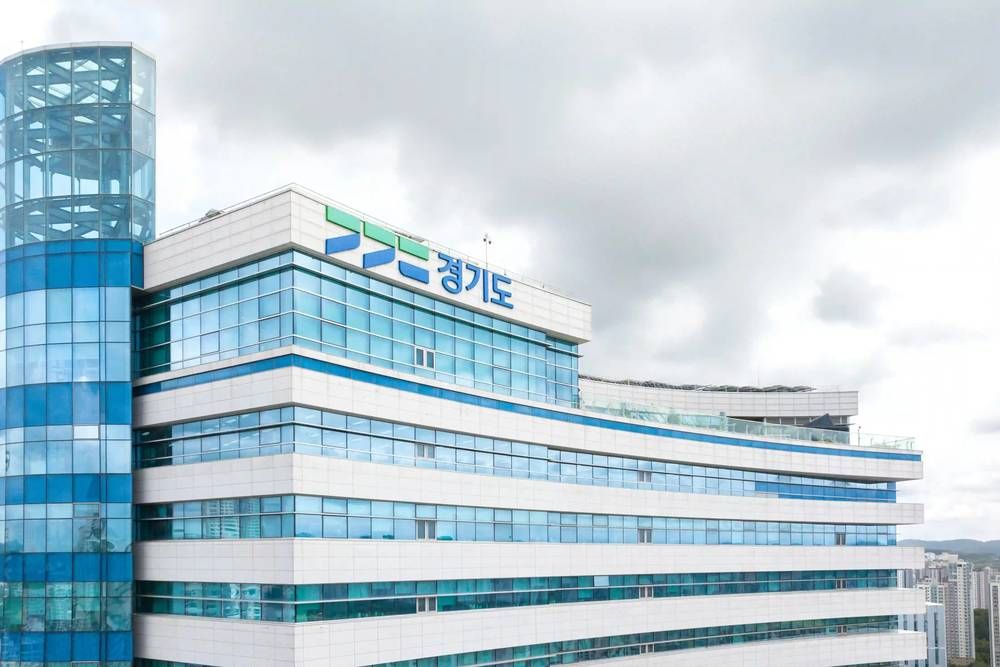

경기도, 농지 특별조치법안 처분명령 대상 조정 건의

영농 취득·투기 취득 가르는 조사 기준 요청…기존 농업인 경과조치도 건의
경기도가 농림축산식품부(농식품부)의 「특정농지등의 정리에 관한 특별조치법안」 수도권 설명회에서 농지 투기 판단 기준과 처분명령 대상을 조정해 달라고 건의한다고 11월 16일 밝혔다. 첫 건의는 토지거래허가구역 안 농지에서 영농 목적 취득과 투기 목적 취득을 가려낼 조사 기준을 만들어 달라는 것이다. 둘째는 외국인 주택거래 관리를 위해 지정된 허가구역에서 실제 토지거래계약 허가 대상이 아닌 농지를 처분명령에서 빼도록 「농지법」 제10조 제1항 단서를 고치자는 것이다(경기도는 투기와 무관한 내국인 소유 농지가 처분명령 대상에 들어가지 않게 하자는 입장이다). 구역 지정 전과 개정법 시행 전에 취득한 농지의 적용 기준을 분명히 하고, 기존 농업인을 위한 경과조치를 두자는 건의도 함께 낸다.
건의 대상인 법안은 10월 30일 국회에 발의됐고, 농지 전수조사에서 드러난 관행적 임대차·휴경·무허가 시설처럼 실제 이용과 서류상 상태가 다른 농지를 정리하는 내용이다. 농지 소유·이용 위반에 대한 처분명령의 한시 유예, 임대차와 농지은행 임대위탁 요건 완화, 기존 무단 전용시설의 사후 농지전용허가 신청 허용, 농업·농촌 관련 시설의 농지보전부담금 면제를 담았고, 투기 목적으로 취득한 농지와 농업환경을 중대하게 훼손한 행위는 특례에서 뺐다. 서울·인천·경기 시군 농지 담당자와 국립농산물품질관리원, 한국농어촌공사, 농업인단체, 이·통장 등 약 400명이 참석하는 설명회 일정은 17일 경기남부, 19일 경기북부다.
뉴스 바로 읽기
본지가 공개 자료와 본지 보도로 확인한 사실만 덧붙입니다
농식품부는 11월 10일 보도자료에서 이 법안 설명회를 11일 충북을 시작으로 19일까지 9개 시·도에서 모두 10차례 연다고 안내했다. 참석 대상은 지방정부와 국립농산물품질관리원, 한국농어촌공사 담당자, 지역 농업인단체, 이·통장 등이다. 본지는 11월 12일 국회 입법공청회를 보도했다.
출처: 경기도뉴스포털(경기도 보도자료) 2026-11-16 경기도 농수산생명과학국 원문 보기
출처: 농림축산식품부 2026-11-10 보도자료 '특정농지등의 정리에 관한 특별조치법안' 지역별 설명회 개최 원문 보기